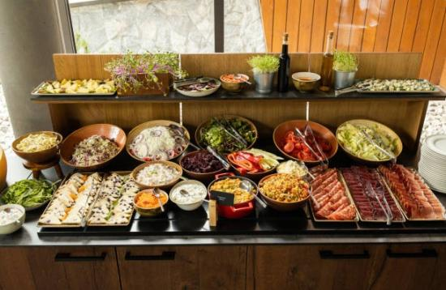

NutriChefHub's
FREQUENTLY ASKED QUESTIONS
Answer: You can find recipes on NutriChef by visiting our
website and navigating to the "Recipes" section. There,
you'll find a wide range of healthy and delicious recipes
sorted by categories such as breakfast, lunch, dinner,
snacks, and desserts. You can also use the search bar to
find specific recipes based on ingredients or dietary
preferences.
Answer: Yes, NutriChef offers a variety of recipes
tailored to different dietary needs. Whether you're
looking for vegetarian, vegan, gluten-free, dairy-free, or
low-carb options, you can find recipes that suit your
preferences. Each recipe includes detailed information
about its ingredients, cooking instructions, and
nutritional facts, making it easy to find meals that align
with your dietary requirements.
Answer: Absolutely! NutriChef welcomes recipe submissions
from our community. If you have a healthy and tasty recipe
you'd like to share, you can submit it through our
website. Our team will review the recipe, and if it meets
our guidelines, we may feature it on our platform, giving
you credit as the creator.
Answer: Yes, we offer a wide range of recipes suitable for
all skill levels, including beginners. We understand that
everyone has different cooking abilities and strive to
provide recipes that are easy to follow, with clear
instructions and accessible ingredients. You'll find
step-by-step guidance and helpful tips throughout our
recipes to support your culinary journey.
Answer: Absolutely! NutriChef provides a convenient recipe
saving feature. When you create an account on our website,
you can save your favorite recipes to your personal recipe
box. This way, you can easily access and organize your
preferred recipes, allowing you to revisit them whenever
you want.
Answer: Each recipe on NutriChef includes detailed
nutritional information. When you view a recipe, you'll
find a section that provides the breakdown of calories,
macronutrients (carbohydrates, proteins, and fats),
vitamins, minerals, and other relevant nutritional facts.
This information is based on the ingredients used and the
specified serving size.
Answer: Yes, you can customize the nutritional information
based on your desired portion sizes. NutriChef provides
serving size flexibility, allowing you to adjust the
number of servings and instantly see the updated
nutritional information for each ingredient and the entire
recipe. This feature helps you plan your meals and track
your nutritional intake accurately
Answer: NutriChef strives to provide accurate and reliable
nutritional information. While our team takes great care
in calculating and presenting the nutritional facts, it's
important to note that they are intended for general
informational purposes. We recommend consulting with a
qualified healthcare professional or registered dietitian
if you have specific dietary concerns or medical
conditions.
Answer: Yes, NutriChef understands the importance of
allergen information. Our recipes indicate common
allergens such as nuts, dairy, gluten, and soy. However,
it's essential to review the recipe's ingredient list
carefully to ensure it aligns with your specific allergen
needs or dietary restrictions.
Answer: Currently, NutriChef does not offer a built-in
feature for tracking daily nutritional intake. However,
you can utilize the nutritional information provided with
each recipe to monitor and manage your overall nutritional
goals. We recommend using external tools or apps dedicated
to tracking nutrition to get a comprehensive overview of
your daily intake.

Answer: Yes, NutriChef is committed to helping you become
a better cook. In addition to providing recipes, we also
offer cooking tips and techniques to enhance your culinary
skills. You can find articles, guides, and videos on our
website that cover various cooking methods, ingredient
substitutions, meal planning, and other valuable tips to
support your healthy cooking journey.
Answer: Absolutely! We encourage you to engage with our
community and ask any cooking-related questions you may
have. You can leave comments on recipe pages, participate
in our discussion forums, or reach out to us through our
contact page. Our team and fellow food enthusiasts are
here to assist you and share their knowledge and
experiences.
Answer: Yes, NutriChef provides instructional videos and
tutorials on various cooking techniques. You can find them
in our "Cooking Tips" section, where our experts
demonstrate essential cooking skills, such as knife
techniques, sautéing, baking, and more. These videos are
designed to help you improve your culinary prowess and
become more confident in the kitchen.
Answer: Absolutely! NutriChef recognizes the importance of
meal planning and batch cooking for a healthy lifestyle.
We provide articles and guides on meal planning
strategies, tips for efficient batch cooking, and how to
incorporate nutritious ingredients into your weekly meal
prep. These resources will help you save time, reduce food
waste, and maintain a well-balanced diet.
Answer: Yes, NutriChef offers information on ingredient
substitutions and alternatives. We understand that dietary
preferences and ingredient availability can vary. Our
articles and guides cover common ingredient swaps, such as
replacing dairy or gluten-containing ingredients, offering
suggestions to cater to different dietary needs. We
encourage experimentation and creativity in the kitchen
while making healthier choices. Please note that these
answers are fictional and can be adjusted or expanded to
align with the content and features of your NutriChef
website.